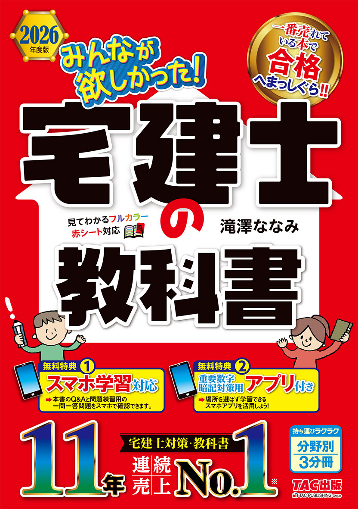
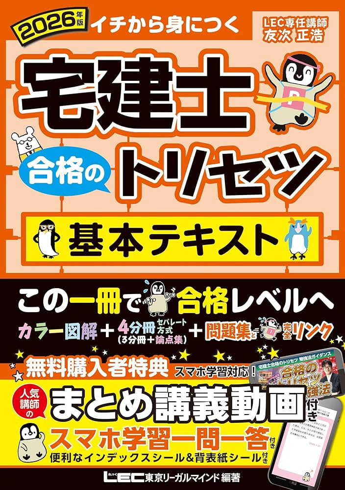
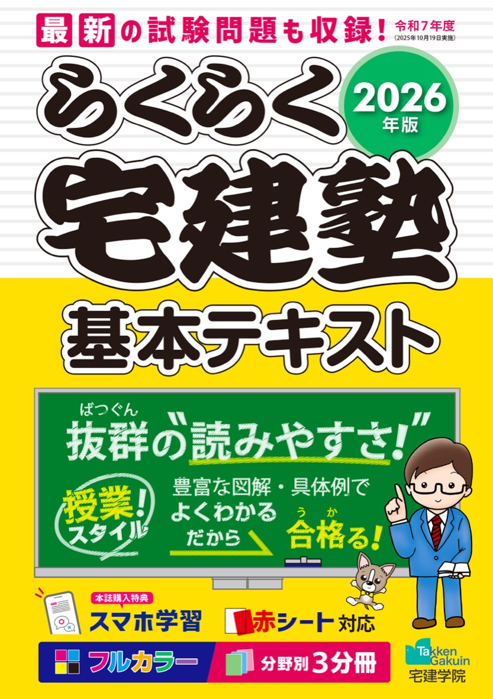

宅建のテキストおすすめ3選【2026年版】独学合格者が選ぶ比較ランキング
「宅建のテキストが多すぎてどれを選べばいいかわからない」という方向けに、2026年版の主要テキストを3冊に絞って比較します。結論を先に言うと、初学者には「みんなが欲しかった！宅建士の教科書」、スピード重視なら「合格のトリセツ」が最適です。
この記事の信頼性について
| 執筆 | 宅建マスター編集部（宅建試験対策サイトの編集チーム） |
|---|---|
| 確認 | 公式情報確認担当（公開前に一次情報との照合を行う担当者） |
| 事実確認日 | 2026-05-21 |
| 主な参照元 | |
| 広告表記 | 当記事内のAmazonリンクはアソシエイト・プログラムに参加しています。リンク先の価格・在庫はAmazonの表示に準じます。 |
この記事でできること
2026年度版の宅建テキストを比較し、自分に合う1冊と同シリーズの問題集を選びたい。
- テキストを1冊に決める
- 同じシリーズの問題集をセットで用意する
- 過去問一覧で演習する
1宅建テキストの選び方【3つのポイント】
① 必ず2026年度版を選ぶ
宅建試験は毎年4月施行の法改正から出題されます。2024年版・2025年版のテキストでは対応できない問題が出る可能性があります。
② フルカラーか白黒か
フルカラーは図解が見やすく理解しやすい反面、価格がやや高め。白黒でも合格できますが、初学者はフルカラーの方が続けやすいです。
③ 問題集とのセット購入を前提にする
テキストだけでは合格できません。同じシリーズの問題集とセットで購入すると、テキストの参照ページと問題集のリンクが一致して効率的に学習できます。
2おすすめテキスト比較表
表の各項目をタップするとAmazonの商品ページを開けます。スマホでは下のカードからも選べます。

1位
みんなが欲しかった！宅建士の教科書
初学者・図解で理解したい人
Amazonで確認する

2位
宅建士 合格のトリセツ 基本テキスト
コンパクトに学びたい人
Amazonで確認する

3位
らくらく宅建塾 基本テキスト
再受験者・知識がある人
Amazonで確認する
| 表紙 | テキスト | 出版社 | 価格（税込） | ページ数 | カラー | 向いている人 | |
|---|---|---|---|---|---|---|---|
| みんなが欲しかった！宅建士の教科書 | TAC出版 | 3,300円 | 約700ページ | フルカラー | 初学者・図解で理解したい人 | Amazonで見る | |
| 宅建士 合格のトリセツ 基本テキスト | LEC | 3,300円 | 644ページ | フルカラー | コンパクトに学びたい人 | Amazonで見る | |
| らくらく宅建塾 基本テキスト | 宅建学院 | 3,300円 | 538ページ | 2色刷り | 再受験者・知識がある人 | Amazonで見る |
31位：みんなが欲しかった！宅建士の教科書（TAC出版）
初学者に最もおすすめのテキストです。
特徴
- 著者は資格テキストで定評のある滝澤ななみ氏
- フルカラーで図解・イラストが豊富
- 各章の冒頭に「この章で学ぶこと」がまとめてある
- 同シリーズの問題集との連携が強く、テキストの参照番号と問題集が完全対応
こんな人に向いている
- 宅建の勉強が初めて
- 法律用語に慣れていない
- 視覚的に理解したい
こんな人には向かない
- 法律の知識がある（内容がやや丁寧すぎる場合がある）
- 薄いテキストでサクサク進めたい
42位：宅建士 合格のトリセツ 基本テキスト（LEC）
644ページとコンパクトにまとまっており、効率重視の学習に最適です。
特徴
- LEC総合研究所の宅建試験チームが執筆
- フルカラーで見やすい
- 動画サポート付き（2026年版はアプリで全問音声読み上げ対応）
- 一問一答問題集との連携が高評価
こんな人に向いている
- 短期集中で合格したい（3〜4ヶ月）
- スマホ・アプリ学習を組み合わせたい
- 講義動画との併用を考えている
こんな人には向かない
- じっくり読み込むスタイルが好き
- 問題数をできるだけ多くこなしたい
53位：らくらく宅建塾 基本テキスト（宅建学院）
長年のベストセラーで、独特の語呂合わせが特徴的なテキストです。
特徴
- 宅建専門校が作った実績のあるテキスト
- 覚えにくい数値・条件を語呂合わせで暗記できる
- 2色刷りでシンプル
- 538ページとボリュームが控えめ
こんな人に向いている
- 再受験者（一度宅建の勉強をしたことがある）
- 語呂合わせで暗記したい
- シンプルなテキストが好き
こんな人には向かない
- 初学者（説明が簡潔すぎる場合がある）
- フルカラーで視覚的に学びたい
6テキストと合わせて買うべき問題集
テキストだけでは合格できません。問題集は同じシリーズを選ぶのが鉄則です。
| テキスト | おすすめ問題集 |
|---|---|
| みんなが欲しかった！教科書 | みんなが欲しかった！宅建士の問題集 |
| 合格のトリセツ | 合格のトリセツ 厳選分野別過去問題集 |
| らくらく宅建塾 | 過去問宅建塾 |
各シリーズの問題集もAmazonで確認できます（テキストと同じシリーズを選んでください）。
よくある質問
テキストは何周すればいいですか？
最低3周が目安です。1周目は全体像の把握、2周目は理解を深める、3周目は苦手箇所の集中学習というサイクルが効果的です。
古いテキストでも勉強できますか？
2025年版以前のテキストは法改正に対応していない可能性があります。必ず2026年度版を使ってください。
電子書籍版はありますか？
3冊とも電子書籍版（Kindle）があります。ただし試験本番は紙の問題なので、紙のテキストに慣れておくことも大切です。
記事の基本情報
| ジャンル | 学習計画 |
|---|---|
| タグ | テキスト / 教材選び / 2026年度 |
公式情報の確認
公式情報の確認：宅地建物取引士試験の最新情報は、不動産適正取引推進機構（RETIO）などの公式情報を必ず確認してください。